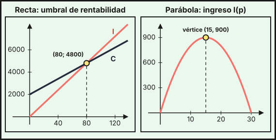
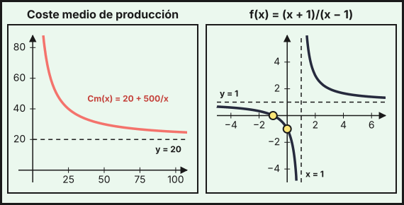
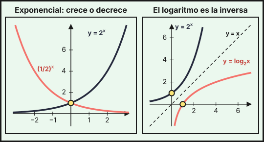
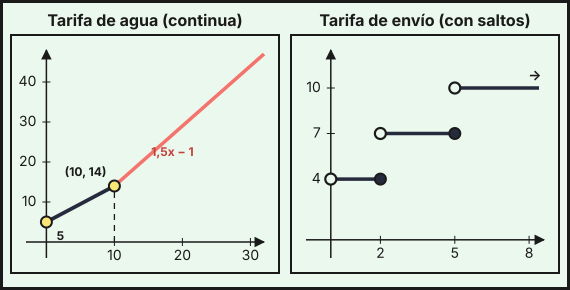

Funciones
1. Concepto, dominio y propiedades básicas
Una función \(f\) asigna a cada número \(x\) de su dominio un único valor \(y=f(x)\). El dominio \(\operatorname{Dom}f\) es el conjunto de valores de \(x\) para los que \(f(x)\) existe; el recorrido es el conjunto de valores que toma \(y\). La gráfica es el conjunto de puntos \((x,\,f(x))\).
Dominio según el tipo de función:
| Tipo | Dominio |
|---|---|
| Polinómica | todos los reales, \(\mathbb{R}\) |
| Racional \(\dfrac{P(x)}{Q(x)}\) | \(\mathbb{R}\) menos los \(x\) que anulan el denominador, \(Q(x)=0\) |
| Con raíz de índice par \(\sqrt{g(x)}\) | los \(x\) con \(g(x)\ge0\) |
| Logarítmica \(\ln g(x)\) | los \(x\) con \(g(x)>0\) |
| Exponencial \(a^{g(x)}\) | el dominio de \(g\) |
Ejemplos:
- \(f(x)=\dfrac{2x+1}{x^2-4}\): el denominador se anula en \(x=\pm2\), luego \(\operatorname{Dom}f=\mathbb{R}\setminus\{-2,\,2\}\).
- \(g(x)=\ln(x-3)\): hace falta \(x-3>0\), luego \(\operatorname{Dom}g=(3,\,+\infty)\).
- \(h(x)=\sqrt{6-2x}\): hace falta \(6-2x\ge0\), luego \(\operatorname{Dom}h=(-\infty,\,3]\).
Puntos de corte con los ejes: con el eje \(Y\), el punto \((0,\,f(0))\) (si \(0\) está en el dominio); con el eje \(X\), los puntos \((x,\,0)\) con \(f(x)=0\).
Simetrías: \(f\) es par si \(f(-x)=f(x)\) (simétrica respecto del eje \(Y\), como \(x^2\)) y impar si \(f(-x)=-f(x)\) (simétrica respecto del origen, como \(x^3\)).
Crecimiento: \(f\) es creciente en un intervalo si al aumentar \(x\) aumenta \(f(x)\), y decreciente si disminuye. Los puntos donde pasa de crecer a decrecer son máximos relativos, y a la inversa, mínimos relativos. Con derivadas (tema 6) se calculan con precisión.
2. Funciones polinómicas
Función lineal \(f(x)=mx+n\): su gráfica es una recta de pendiente \(m\) (lo que aumenta \(y\) cuando \(x\) aumenta 1) y ordenada en el origen \(n\) (el corte con el eje \(Y\)). Es el modelo de las magnitudes que crecen de forma constante.
Ejemplo (umbral de rentabilidad). Un taller tiene unos costes fijos de 2 000 € y 35 € de coste por unidad fabricada, y vende cada unidad a 60 €:
\[C(x)=2000+35x,\qquad I(x)=60x,\qquad B(x)=I(x)-C(x)=25x-2000\]
El umbral de rentabilidad es el valor de \(x\) en el que ingresos y costes coinciden: \(60x=2000+35x\Rightarrow x=80\) unidades (para \(x=80\), \(I=C=4800\) €). A partir de ahí hay beneficio: con 100 unidades, \(B(100)=500\) €.
Función cuadrática \(f(x)=ax^2+bx+c\) con \(a\neq0\): su gráfica es una parábola, que se abre hacia arriba si \(a>0\) y hacia abajo si \(a<0\). Su vértice está en \(x_v=-\dfrac{b}{2a}\), y es un mínimo si \(a>0\) y un máximo si \(a<0\). Los cortes con el eje \(X\) salen de resolver \(ax^2+bx+c=0\).
Ejemplo (ingreso máximo). Si el precio de un producto es \(p\) euros, la demanda es \(q=120-4p\) miles de unidades (como en el tema 2) y el ingreso es
\[I(p)=p\cdot(120-4p)=-4p^2+120p\]
Corta el eje \(X\) en \(p=0\) y \(p=30\); el vértice está en \(p_v=-\dfrac{120}{2\cdot(-4)}=15\), con \(I(15)=900\) (miles de euros), cuando se venden \(q=60\) miles de unidades. Si cada unidad cuesta 5 € producirla, el beneficio es \(B(p)=(p-5)(120-4p)=-4p^2+140p-600\), que corta el eje \(X\) en \(p=5\) y \(p=30\) y tiene su máximo en \(p_v=17{,}5\) con \(B=625\).

Las polinómicas de grado 3 o más tienen gráficas con más «curvas». Para estudiarlas se necesitan las derivadas (temas 6 y 7).
3. Funciones racionales
Una función racional es un cociente de polinomios, \(f(x)=\dfrac{P(x)}{Q(x)}\). Su dominio excluye los ceros de \(Q\). En un cero de \(Q\) que no anula a \(P\) la gráfica tiene una asíntota vertical (la curva se pega a una recta vertical sin tocarla). Cuando \(x\) crece mucho, la curva puede acercarse a una asíntota horizontal \(y=b\). Estas asíntotas se estudian con límites en el tema 5.
El caso más sencillo es la hipérbola \(f(x)=\dfrac{k}{x-a}+b\), con asíntotas \(x=a\) e \(y=b\).
Ejemplo (coste medio). Una empresa tiene unos costes totales \(C(x)=500+20x\) al producir \(x\) unidades. El coste medio por unidad es
\[C_m(x)=\frac{500+20x}{x}=20+\frac{500}{x},\qquad x>0\]
| \(x\) | 10 | 25 | 100 | 500 | 1000 |
|---|---|---|---|---|---|
| \(C_m(x)\) | 70 | 40 | 25 | 21 | 20,5 |
El coste medio baja al producir más (se reparten los costes fijos), pero nunca baja de 20 €, que es la asíntota horizontal \(y=20\).
Ejemplo (representación). Para \(f(x)=\dfrac{x+1}{x-1}=1+\dfrac{2}{x-1}\):
- Dominio: \(\mathbb{R}\setminus\{1\}\). Asíntota vertical: \(x=1\).
- Asíntota horizontal: \(y=1\), porque \(f(x)=1+\dfrac{2}{x-1}\) se acerca a 1 cuando \(x\) crece o decrece mucho.
- Cortes: con el eje \(Y\), \(f(0)=-1\); con el eje \(X\), \(x+1=0\Rightarrow x=-1\).
- Tabla de valores:
| \(x\) | \(-3\) | \(-2\) | \(0\) | \(2\) | \(3\) | \(5\) |
|---|---|---|---|---|---|---|
| \(f(x)\) | \(\tfrac12\) | \(\tfrac13\) | \(-1\) | \(3\) | \(2\) | \(\tfrac32\) |

4. Funciones exponenciales
Una función exponencial es \(f(x)=a^x\) con \(a>0\) y \(a\neq1\). Sus propiedades son:
- Dominio \(\mathbb{R}\) y recorrido \((0,\,+\infty)\): siempre es positiva.
- Pasa por \((0,\,1)\) porque \(a^0=1\).
- Si \(a>1\) es creciente (crecimiento); si \(0<a<1\) es decreciente (decrecimiento).
- Tiene una asíntota horizontal en \(y=0\): por la izquierda si \(a>1\) y por la derecha si \(0<a<1\).
El número \(e\approx2{,}718\) es la base más usada en ciencia y economía: \(f(x)=e^x\).
Se usa para modelizar magnitudes que crecen o decrecen un porcentaje fijo en cada período:
- Capital: \(5000\) € al \(3\,\%\) anual valen \(C(t)=5000\cdot1{,}03^t\) tras \(t\) años; con \(t=10\), \(C(10)\approx6719{,}58\) €.
- Depreciación: una máquina de \(20000\) € que pierde el \(15\,\%\) de su valor cada año vale \(V(t)=20000\cdot0{,}85^t\); tras 5 años, \(V(5)\approx8874{,}11\) €.
- Población: un municipio de \(80000\) habitantes que pierde el \(1{,}5\,\%\) cada año tiene \(P(t)=80000\cdot0{,}985^t\); tras 10 años, \(P(10)\approx68778\) habitantes.
5. Funciones logarítmicas
El logaritmo en base \(a\) (\(a>0\), \(a\neq1\)) es el exponente al que hay que elevar \(a\) para obtener un número: \(\log_a x=y\iff a^y=x\). Con base \(10\) se escribe \(\log x\) y con base \(e\), \(\ln x\).
La función \(f(x)=\log_a x\) es la inversa de \(a^x\): sus gráficas son simétricas respecto de la recta \(y=x\). Sus propiedades son:
- Dominio \((0,\,+\infty)\) y recorrido \(\mathbb{R}\).
- Pasa por \((1,\,0)\) porque \(\log_a1=0\).
- Es creciente si \(a>1\) y decreciente si \(0<a<1\). Tiene una asíntota vertical en \(x=0\).
Propiedades de los logaritmos:
\[\log_a(M\cdot N)=\log_aM+\log_aN\qquad\log_a\frac MN=\log_aM-\log_aN\qquad\log_a M^k=k\log_aM\qquad\log_a M=\frac{\ln M}{\ln a}\]

Ecuaciones exponenciales y logarítmicas. Para despejar un exponente se toman logaritmos; para despejar el argumento de un logaritmo se usa la definición.
- ¿En cuántos años se duplica un capital al \(3\,\%\) anual? \(1{,}03^t=2\Rightarrow t=\dfrac{\ln2}{\ln1{,}03}\approx23{,}45\) años.
- ¿Cuándo tendrá el municipio menos de \(60000\) habitantes? \(80000\cdot0{,}985^t=60000\Rightarrow0{,}985^t=0{,}75\Rightarrow t=\dfrac{\ln0{,}75}{\ln0{,}985}\approx19{,}03\). A los 19 años aún tiene \(60031\) habitantes y a los 20 baja a \(59131\), luego lo hará a partir del año 20.
- \(\log_2(x+3)=4\Rightarrow x+3=2^4=16\Rightarrow x=13\).
- \(3^{2x-1}=81=3^4\Rightarrow2x-1=4\Rightarrow x=\tfrac52\).
- \(e^x=7\Rightarrow x=\ln7\approx1{,}946\).
6. Funciones definidas a trozos
Una función a trozos usa una fórmula distinta en cada intervalo. Su dominio es la unión de los intervalos. Para calcular \(f(a)\) se busca el trozo al que pertenece \(a\) y se aplica su fórmula. Para dibujarla, se representa cada trozo solo en su intervalo, marcando con un punto relleno los extremos que sí pertenecen al trozo y con un punto abierto los que no.
Ejemplo (factura del agua). Una compañía cobra 5 € de cuota fija más 0,90 €/m³ en los primeros 10 m³. Los m³ que pasen de 10 se cobran a 1,50 €:
\[f(x)=\begin{cases}5+0{,}9x&0\le x\le10\\14+1{,}5(x-10)=1{,}5x-1&x>10\end{cases}\]
Se tiene \(f(8)=12{,}2\) €, \(f(10)=14\) € y \(f(25)=36{,}5\) €. Los dos trozos dan el mismo valor en \(x=10\) (\(5+9=14=15-1\)), así que la gráfica no tiene saltos. Si una factura es de 32 €, como \(32>14\) se usa el segundo trozo: \(1{,}5x-1=32\Rightarrow x=22\) m³.
Ejemplo (tarifa de envío). El precio de un envío es 4 € hasta 2 kg, 7 € de más de 2 kg a 5 kg, y 10 € por encima de 5 kg:
\[g(w)=\begin{cases}4&0<w\le2\\7&2<w\le5\\10&w>5\end{cases}\]
Aquí la gráfica sí tiene saltos (en \(w=2\) y \(w=5\)): un paquete de 2 kg cuesta \(g(2)=4\) € y uno de 2,5 kg, \(g(2{,}5)=7\) €. La continuidad se estudia con rigor en el tema 5.

El valor absoluto es otra función a trozos: \(|x-3|=\begin{cases}3-x&x<3\\x-3&x\ge3\end{cases}\).
- Dominio (denominadores, raíces, logaritmos) y, si hay trozos, los intervalos.
- Cortes con los ejes: \(f(0)\) y \(f(x)=0\).
- Asíntotas: verticales en los ceros del denominador; horizontales según el comportamiento para \(x\) grande.
- Simetrías y tabla de valores con puntos a ambos lados de las asíntotas y de los cortes.
- Crecimiento y extremos (con la derivada, temas 6 y 7).
- Unir los puntos respetando dominio, asíntotas y puntos abiertos.
- Lineal \(mx+n\): recta. Cuadrática: parábola de vértice \(x_v=-b/(2a)\).
- Racional: dominio sin ceros del denominador; asíntotas verticales y horizontales.
- Exponencial \(a^x\): \(\mathbb{R}\to(0,\infty)\), pasa por \((0,1)\); \(a>1\) crece, \(0<a<1\) decrece.
- Logaritmo: inversa de la exponencial, definida para \(x>0\), pasa por \((1,0)\).
- A trozos: una fórmula por intervalo; ojo a los puntos de unión (rellenos o abiertos).